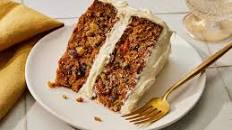

Carrot cake Recipe

Description
Rich and flavorful cake made from carrot and flour, it's nice and tender to the mouth and test
is guaranteed. check below for Ingredients and steps to make.
Ingredients
- flour
- oil/butter
- eggs
- baking powder
- blended carrots
steps
- break and beat your eggs
- add eggs to flour and baking powder
- add your blended carrot
- mix together using your mixing machine
homepage